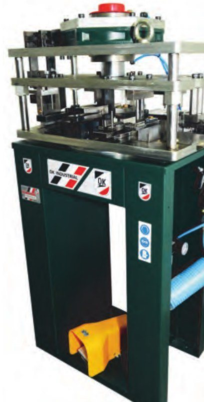
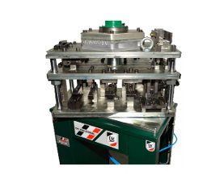
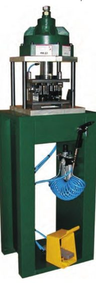

POK RPTPunzonadora manual
Punzonadora manual
POK RPT
Escuadras RPT (ruptura de puente térmico) para las líneas Modena, A40, A30 y Altezza de Aluar.
Cód. 100036Precio a consultar

Prensa neumática giratoria
Corredizas A40 de Aluar, con marco a 90º y hoja a 90º o 45º. Con la POK RPT y el cassette A40 Fija Móvil se completa la línea.
Representante oficial OKFabricación nacional, repuestos originalesDatos tomados de los manuales y folletos del fabricante. Pueden cambiar sin aviso: confirmalos al pedir la cotización.
Escuadras RPT (ruptura de puente térmico) para las líneas Modena, A40, A30 y Altezza de Aluar.

Prensa para la línea A40 Compact con los tres cassettes incluidos. Con la POK RPT se completan las ventanas de abrir, batientes y paños fijos.

Prensa neumática con la matriz 3/8 para la línea Herrero completa (también Ekonal).